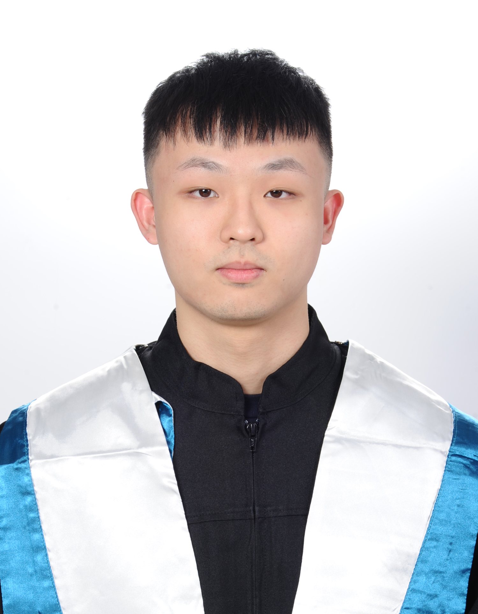

M.S. student at National Taiwan University (NTU) specializing in Legged Robot Locomotion Control, Reinforcement Learning, and Visual Servo Control. Passionate about bridging the Sim-to-Real gap and deploying robust control policies on physical robots.

M.S. in Electrical Engineering
Taipei, Taiwan
Lab: Networked Control Systems Lab (NCS Lab)
Advisor: Prof. Feng-Li Lian
B.S. in Mechanical Engineering
Kaohsiung, Taiwan
Delta Robotics Innovation Center
Taipei, Taiwan
URSROBOT
Taipei, Taiwan
Industrial Technology Research Institute (ITRI)
Hsinchu, Taiwan
NTU Electrical Engineering - "Control System"
Taipei, Taiwan
Yu-Cheng Chang and Feng-Li Lian
2026 IEEE International Conference on Automation Science and Engineering (CASE), Aug 2026
Lu-Ching Wang, Yu-Cheng Chang and Feng-Li Lian
2025 IEEE/ASME International Conference on Advanced Intelligent Mechatronics (AIM), Jul 2025
Yu-Cheng Chang and Feng-Li Lian
2024 International Conference on Advanced Robotics and Intelligent Systems (ARIS), Aug 2024
Quadrupedal Deep Reinforcement for Intelligent Versatile Execution
Reinforcement Learning, Machine Learning, Robot Sensing and Control, Linear Control, Adaptive Control Systems, Optimal Control, Robotics, Digital Image Processing.